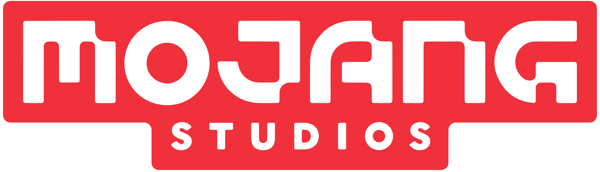

История компании

Зарождение
Все началось в 2009 году в Стокгольме, когда программист Маркус Перссон, известный всему миру как Notch, решил создать игру, где можно было бы строить всё, что угодно. Он основал студию Mojang (со шведского — «гаджет» или «штуковина»), не подозревая, что его проект изменит индустрию навсегда.
«Эпоха блоков»
Первая версия Minecraft была написана на коленке за выходные. Игра не предлагала крутой графики — только кубическую траву и бесконечный горизонт. Но именно эта свобода зацепила миллионы людей. Mojang превратилась из крошечного офиса в одну из самых влиятельных компаний мира. К команде присоединился Йенс Бергенстен (Jeb), который позже стал главным геймдизайнером и «лицом» обновлений.
Переломный момент
В 2014 году произошло событие, шокировавшее фанатов: Маркус Перссон продал Mojang корпорации Microsoft за невероятные 2,5 миллиарда долларов. Многие боялись, что игра «испортится», но под крылом Microsoft компания только выросла. Minecraft стал не просто игрой, а образовательной платформой и культурным феноменом.
«Mojang» сегодня
В 2020 году студия провела ребрендинг и сменила имя на Mojang Studios. Теперь это не только Minecraft: появились такие проекты, как Minecraft Dungeons и Minecraft Legends. Несмотря на миллиардные бюджеты, дух «той самой» шведской инди-студии всё еще живет в каждом обновлении, будь то новые мобы или загадочные биомы.
Сегодня Mojang — это история о том, как одна простая идея о цифровых кубиках может объединить сотни миллионов людей по всей планете.